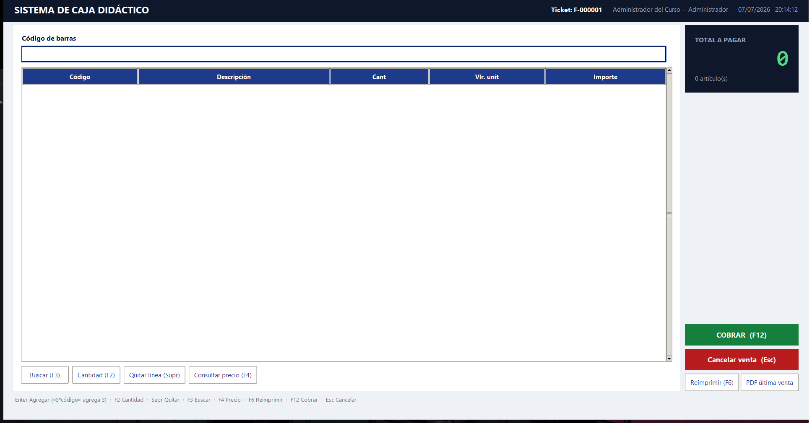
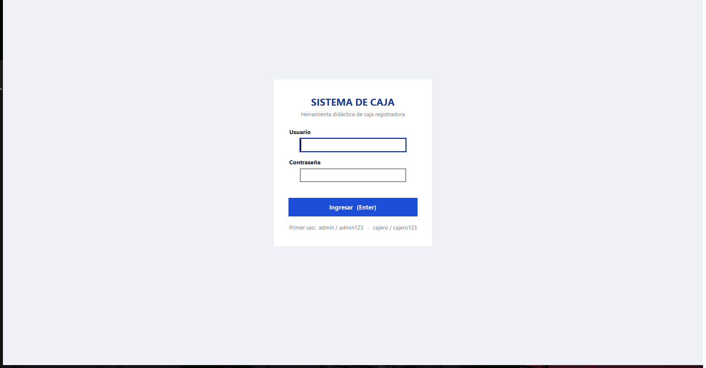

Un punto de venta real —escaneo de códigos, cobro en efectivo, tarjeta y
transferencia, recibos, historial, reportes— empaquetado en un solo
.exe. Sin Internet, sin instalador, sin dependencias, sin
arriesgar un peso real mientras se practica.
No requiere Python ni permisos de administrador · El código fuente completo está en github.com/TheWiche/caja-registradora-poe
Botones grandes, visor tipo POS, y un flujo pensado para escanear, cobrar y entregar el cambio sin perder tiempo entre un cliente y el siguiente.

El corazón del sistema: código de barras a la izquierda, visor de total a la derecha, y el cobro como un paso aparte con denominaciones rápidas — igual que una caja de verdad.
Cada cajero tiene su propio usuario; el administrador gestiona productos, perfiles, reportes y configuración. Toda venta queda asociada a quien la hizo.

Cada función del plan de estudios de Atención al Cliente y Manejo de Caja, resuelta con la misma fidelidad que un POS comercial.
Compatible con cualquier lector USB tipo teclado. Cero configuración: conectar y escanear.
Cobro con tarjeta débito/crédito sin lector real: animación de procesamiento, código de autorización y opción de practicar un rechazo.
Simulación de prácticaGenera un código QR (motor propio, sin librerías) hacia una pasarela educativa local: un celular lo escanea y aprueba el pago desde su navegador.
Simulación de prácticaImprime en cualquier impresora instalada o guarda el recibo como PDF — generado también sin librerías externas.
Búsqueda por fecha con un mini calendario 100% navegable por teclado, o por número de factura.
Total vendido por día, número de ventas y producto más vendido, listos para revisar en clase.
El administrador crea cajeros, restablece contraseñas y activa o desactiva perfiles sin perder la trazabilidad de las ventas.
Base de datos local (SQLite), respaldos automáticos y recuperación ante apagones. Funciona igual con o sin red.
Los mismos códigos y precios del catálogo de ejemplo que trae la aplicación. Escriba un código o toque uno de los chips.
Escriba un código de barras (o 3*código para agregar varias unidades) y presione Enter, igual que con un lector real.
El objetivo del plan de estudios: una venta completa, de principio a fin, sin soltar el teclado ni el lector.
Un solo archivo portable. Guárdelo en la carpeta que prefiera —el programa crea ahí mismo su carpeta datos/.
Doble clic. No necesita instalar Python, ni permisos de administrador, ni conexión a Internet.
Usuarios de ejemplo: admin / admin123 y cajero / cajero123. Cámbielos antes de usarlo con estudiantes.
Al ser un ejecutable nuevo sin certificado de firma de código (que tiene costo), Windows puede mostrar «Se impidió el inicio de una aplicación no reconocida». Es normal en software distribuido de forma independiente: elija «Más información» → «Ejecutar de todas formas». El código fuente completo es público y auditable en el repositorio de GitHub.
Gratis, de código abierto, y construido específicamente para el aula.
WINDOWS 10 / 11 · ~13 MBDescargar CajaRegistradora.exe